1016B10 SINGLE CAMSHAFT HOUSING - REPLACE gasket
- Path
- Procedures > 10 ENGINE > 1016 CYLINDER HEAD(S) > 1016B cylinder head extension(s) > 1016B10 SINGLE CAMSHAFT HOUSING - REPLACE gasket
- Kind
- repair procedure (removal / refitting; the operation number is the code)
- Applies to
- engines: 2.4 JTD 20V; all production periods
- Interactive page
- https://sloeber94.github.io/elrnDB-lThss/en/#/851167
Applies to: engines: 2.4 JTD 20V; all production periods
 Removing
Removing
 Refitting
RefittingSee in Op. 7055B54 PROTECTION/GUARD under engine - R.R.
See in Op. 4450B04 Right FRONT WHEEL (one) - R.R.
See in Op. 7055B42 FRONT WHEEL ARCH LINER (one), left or right - R.R.
See in Op. 7055B64 Engine compartment DUST SEAL in front wheel arch (one), left or right - R.R.
See in Op. 1016A10 SOUND-PROOFING COVER - R.R.
See in Op. 7040D50 ENGINE COMPARTMENT UPPER SOUND INSULATION SHIELD - R.R.
See in Op. 1048B44 RIGID air supply PIPE from heat exchanger to intake manifold - R.R.
See in Op. 1048A56 UPPER RESONATOR - R.R.
See in Op. 1092G10 Engine components single drive BELT - R.R.
See in Op. 1092G21 Engine components single belt FIXED TENSIONER - R.R. with belt removed
See in Op. 1092A10 Crankshaft PULLEY - R.R.
See in Op. 1032D12 Timing system protective COVER(S) - R.R.
1. Loosen the nut retaining the timing belt moving tensioner.
2. Release and remove the toothed timing drive belt.
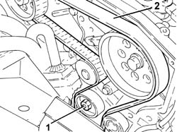
Applies to: engines: 2.4 JTD 20V; all production periods
1. Disconnect the electrical connection for the timing sensor.
 | Description | Connector |
|---|---|---|
1 | Timing sensor | K047 |
2. Undo the fixing bolt (2a) and remove the sensor (2b) from the housing in the camshaft housing.
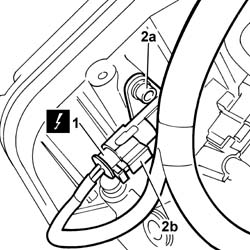
Applies to: engines: 2.4 JTD 20V; all production periods
1. Undo the connectors (1a) and (1b) and remove the pipes from the fuel manifold to the injectors (1c).
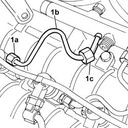
Applies to: engines: 2.4 JTD 20V; all production periods
1. Disconnect the electrical connections from the injectors.
| Description | Connector |
|---|---|---|
1 | Injector | N070A |
| Description | Connector |
|---|---|---|
1 | Injector | N070B |
| Description | Connector |
|---|---|---|
1 | Injector | N070C |
| Description | Connector |
|---|---|---|
1 | Injector | N070D |
| Description | Connector |
|---|---|---|
1 | Injector | N070E |
2. Undo the fixing bolts (2a) and release the electrical wiring (2b) moving outside of the work area.
3. Manually push the clips (3a) and disconnect the pipe from the injectors to the fuel recovery manifold (3b), injector side, and move it sideways.
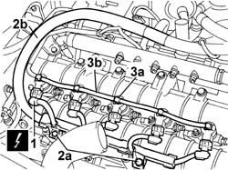
Applies to: engines: 2.4 JTD 20V; all production periods
1. Undo the injector bracket retaining nuts.
2. Remove the injectors (2a) complete with brackets using the tools (2b) and (2c).
 | Description | Code | Function |
|---|---|---|---|
2b | Extractor | 1.870.739.000 | Removing injectors |
| Description | Code | Function |
|---|---|---|---|
2b | Extractor | 1.870.897.300 | Removing injectors |
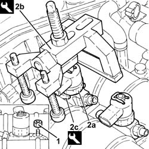
Applies to: engines: 2.4 JTD 20V; all production periods
1. Loosen the bolts (1a) fixing the fuel return manifold (1b).
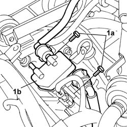
Applies to: engines: 2.4 JTD 20V; all production periods
1. Undo the connectors (1a), (1b) and remove the pipe from the pressure pump to the fuel manifold (1c).
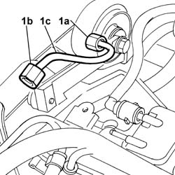
Applies to: engines: 2.4 JTD 20V; all production periods
1. Disconnect the electrical connection from the fuel pressure sensor.
| Description | Connector |
|---|---|---|
1 | Fuel pressure sensor | K083 |
2. Undo the bolts (2a) and remove the single fuel manifold pipe (2b) complete with fuel pressure sensor (2c).
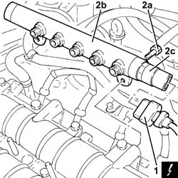
Applies to: engines: 2.4 JTD 20V; all production periods
1. Disconnect the vacuum pipe from the vacuum unit.
2. Disconnect the pipe from the engine oil filler to the separator.
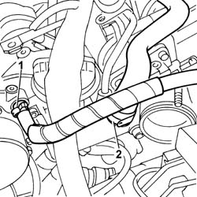
Applies to: engines: 2.4 JTD 20V; all production periods
1. Disconnect the electrical wiring from the heater plugs.
| Description | Connector |
|---|---|---|
1 | Heater plugs | A040A |
| Description | Connector |
|---|---|---|
1 | Heater plugs | A040E |
| Description | Connector |
|---|---|---|
1 | Heater plugs | A040D |
| Description | Connector |
|---|---|---|
1 | Heater plugs | A040C |
| Description | Connector |
|---|---|---|
1 | Heater plugs | A040B |
2. Disconnect the flexible sections of the vacuum pipes from the variable geometry solenoid valve (2a) and vacuum reservoir solenoid valve (2b).
3. Undo the retaining bolts.
4. Remove the rigid section of the vacuum pipe.
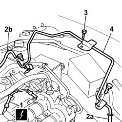
Applies to: engines: 2.4 JTD 20V; all production periods
1. Undo the fixing bolts (1a) and (1b) and remove the single camshaft housing (1c).
- Recover the underlying gasket.
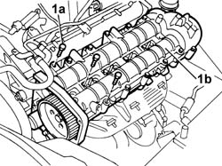
Applies to: engines: 2.4 JTD 20V; all production periods
Refitting
Removing- Fit a new gasket on the cylinder head.
1. Remove the plugs (1a) and fit the camshaft timing tools (1b) on the camshaft housing.
| Description | Code | Function |
|---|---|---|---|
1b | Templates | 1.870.896.900 | Engine tuning |
- Remove the inlet side camshaft timing tool and tighten the plug.
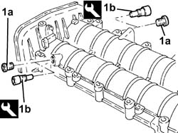
Applies to: engines: 2.4 JTD 20V; all production periods
1. Place the camshaft housing assembly (1a) in position and secure it tightening the bolts (1b) to the recommended torque.
2. Loosen the bolt fixing the exhaust side camshaft pulley.
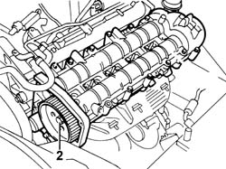
Applies to: engines: 2.4 JTD 20V; all production periods
1. Undo the bolt fixing the crankcase front cover shown in the diagram.
- Fit the timing drive belt on the drive gear, checking that the belt teeth are correctly inserted in the gear grooves.
2. Fit the tool (2a) and fasten it using the calibrated screw (2b).
| Description | Code | Function |
|---|---|---|---|
2a | Template | 1.860.905.000 | Timing belt timing |
| Description | Code | Function |
|---|---|---|---|
2b | Calibrated Screw | 1.860.905.010 | Timing belt timing |
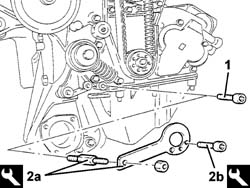
Applies to: engines: 2.4 JTD 20V; all production periods
1. Fully fit the toothed timing drive belt.
2. Use a screwdriver for leverage in the opening (2a) until the reference for the tensioner (2b) is aligned with the opening reference (2c) and, in this position, tighten the nut (2d) for the belt tensioner to the recommended torque.
 | Value - daNm | Fastening | Component | Ø |
|---|---|---|---|---|
2d | 2.5 | Nut | MOBILE TIMING TENSIONER | M8 |
3. Tighten the bolt fixing the exhaust side camshaft toothed pulley to the recommended torque.
| Value - daNm | Fastening | Component | Ø |
|---|---|---|---|---|
3 | 12 | Bolt | TIMING DRIVEN PULLIES | M12 |
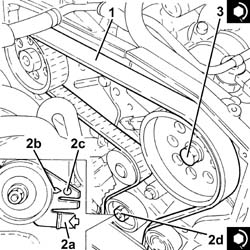
Applies to: engines: 2.4 JTD 20V; all production periods
- Remove the timing tools.
| Description | Code | Function |
|---|---|---|---|
. | Templates | 1.870.896.900 | Engine tuning |
| Description | Code | Function |
|---|---|---|---|
. | Template | 1.860.905.000 | Timing belt timing |
| Description | Code | Function |
|---|---|---|---|
. | Calibrated Screw | 1.860.905.010 | Timing belt timing |
- Rotate the crankshaft through two revolutions.
- Check that the timing is correct once again by refitting the timing tools.
- Check the alignment of the tensioning references on the timing moving tensioner.
- Tighten the bolt fixing the crankcase front cover removed previously.
- Tighten the plug in the camshaft housing for fitting the exhaust side timing tool.
- Connect the pipe from the engine oil filler to the separator.
- Connect the vacuum pipe to the vacuum unit.
- Fit the rigid section of the vacuum pipe.
- Tighten the fixing bolts and connect the flexible sections of the vacuum pipes to the variable geometry solenoid valve and to the vacuum reservoir solenoid valve.
- Connect the electrical wiring to the heater plugs.
| Description | Connector |
|---|---|---|
. | Heater plugs | A040A |
| Description | Connector |
|---|---|---|
. | Heater plugs | A040D |
| Description | Connector |
|---|---|---|
. | Heater plugs | A040E |
| Description | Connector |
|---|---|---|
. | Heater plugs | A040C |
| Description | Connector |
|---|---|---|
. | Heater plugs | A040B |
1. Fit the single fuel manifold pipe (1a) complete with fuel pressure sensor (1b) and secure it tightening the bolts (1c) to the recommended torque.
| Value - daNm | Fastening | Component | Ø |
|---|---|---|---|---|
1c | 2.5 | Bolts | INJECTOR FUEL MANIFOLD (DIESEL) | M8 |
2. Connect the electrical connection to the fuel pressure sensor.
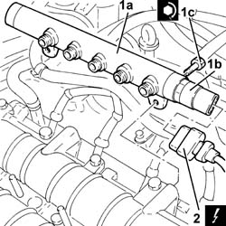
Applies to: engines: 2.4 JTD 20V; all production periods
1. Fit a new pipe from the pressure pump to the single fuel manifold and secure it using the connectors without tightening them.
2. Tighten the connector for the pipe from the pressure pump to the single fuel manifold, pump side, to the recommended torque using a spanner.
| Value - daNm | Fastening | Component | Ø |
|---|---|---|---|---|
2 | (pump side) 2.3 | Connector | PRESSURE PUMP LINE TO FUEL MANIFOLD | M14X1.5 |
3. Tighten the connector for the pipe from the pressure pump to the single fuel manifold, fuel manifold side, to the recommended torque using a spanner.
| Value - daNm | Fastening | Component | Ø |
|---|---|---|---|---|
3 | (manifold side) 2.3 | Connector | PRESSURE PUMP LINE TO FUEL MANIFOLD | M14X1.5 |
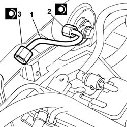
Applies to: engines: 2.4 JTD 20V; all production periods
- Tighten the bolts fixing the fuel return manifold to the recommended torque.
1. Fit the injectors (1a) in their seats complete with brackets and tighten the nuts (1b) to the recommended torque.
| Value - daNm | Fastening | Component | Ø |
|---|---|---|---|---|
1b | 3 | Nut | INJECTORS(DIESEL) | M8X1,25 |
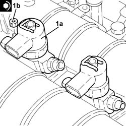
Applies to: engines: 2.4 JTD 20V; all production periods
1. Fit the new pipes from the fuel manifold to the injectors and secure them without tightening the connectors.
2. Tighten the connectors for the pipes from the fuel manifold to the injector side injectors to the recommended torque using an ordinary spanner.
| Value - daNm | Fastening | Component | Ø |
|---|---|---|---|---|
2 | (injector side) 2 | Connectors | INJECTOR FUEL MANIFOLD PIPE | M12X1.5 |
3. Tighten the connectors for the pipes from the fuel manifold to the fuel manifold side injectors to the recommended torque using an ordinary spanner.
| Value - daNm | Fastening | Component | Ø |
|---|---|---|---|---|
3 | (manifold side) 2 | Connectors | PIPE FUEL MANIFOLD TO INJECTORS | M12X1.5 |
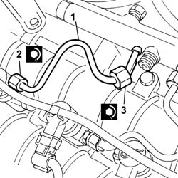
Applies to: engines: 2.4 JTD 20V; all production periods
- Connect the pipe from the injectors to the fuel recovery manifold pushing it until the clips can be head clicking.
- Place the electrical wiring in position and tighten the cable duct fixing bolts.
- Connect the electrical connections for the injectors.
| Description | Connector |
|---|---|---|
. | Injector | N070A |
| Description | Connector |
|---|---|---|
. | Injector | N070B |
| Description | Connector |
|---|---|---|
. | Injector | N070E |
| Description | Connector |
|---|---|---|
. | Injector | N070D |
| Description | Connector |
|---|---|---|
. | Injector | N070C |
- Fit the timing sensor and tighten the retaining bolt.
- Connect the electrical connection to the timing sensor.
| Description | Connector |
|---|---|---|
. | Timing sensor | K047 |
See in Op. 1032D12 Timing system protective COVER(S) - R.R.
See in Op. 1092A10 Crankshaft PULLEY - R.R.
See in Op. 1092G21 Engine components single belt FIXED TENSIONER - R.R. with belt removed
See in Op. 1092G10 Engine components single drive BELT - R.R.
See in Op. 1048A56 UPPER RESONATOR - R.R.
See in Op. 1048B44 RIGID air supply PIPE from heat exchanger to intake manifold - R.R.
See in Op. 7040D50 ENGINE COMPARTMENT UPPER SOUND INSULATION SHIELD - R.R.
See in Op. 1016A10 SOUND-PROOFING COVER - R.R.
See in Op. 7055B64 Engine compartment DUST SEAL in front wheel arch (one), left or right - R.R.
See in Op. 7055B42 FRONT WHEEL ARCH LINER (one), left or right - R.R.
See in Op. 7055B54 PROTECTION/GUARD under engine - R.R.
See in Op. 4450B04 Right FRONT WHEEL (one) - R.R.
- Top up the engine coolant following the instructions in the description:
See in Op. 0010T21 ENGINE COOLANT - Check density and top up if necessary
- Connect the negative battery terminal.
- Remove the vehicle from the lift.
Topics linked from this page (13)
- 0010T21 ENGINE COOLANT - Check density and top up if necessary
- 1016A10 SOUND-PROOFING COVER - R.R.
- 1032D12 Timing system protective COVER(S) - R.R.
- 1048A56 UPPER RESONATOR - R.R.
- 1048B44 RIGID air supply PIPE from heat exchanger to intake manifold - R.R.
- 1092A10 Crankshaft PULLEY - R.R.
- 1092G10 Engine components single drive BELT - R.R.
- 1092G21 Engine components single belt FIXED TENSIONER - R.R. with belt removed
- 4450B04 Right FRONT WHEEL (one) - R.R.
- 7040D50 ENGINE COMPARTMENT UPPER SOUND INSULATION SHIELD - R.R.
- 7055B42 FRONT WHEEL ARCH LINER (one), left or right - R.R.
- 7055B54 PROTECTION/GUARD under engine - R.R.
- 7055B64 Engine compartment DUST SEAL in front wheel arch (one), left or right - R.R.